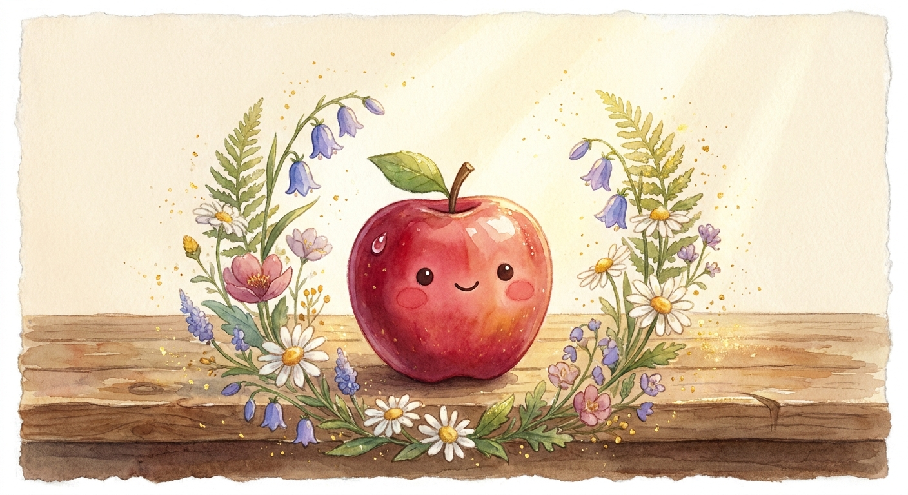

← חזרה למשחקים
English
עברית
🎨
ציירו עם האצבע מנקודה ① לאורך החץ של האות A
1
⭐
ציירו בתוך האות, בכיוון החץ, עד הכוכב ⭐
נצבע: 0 / 5

כל אות שתציירו במדויק תחשוף גל צבעי מים בציור! 🎨
🍎🎨✨
ציור מושלם!
ציירתם את כל האותיות והתפוח התעורר לחיים!
לצייר שוב ✨